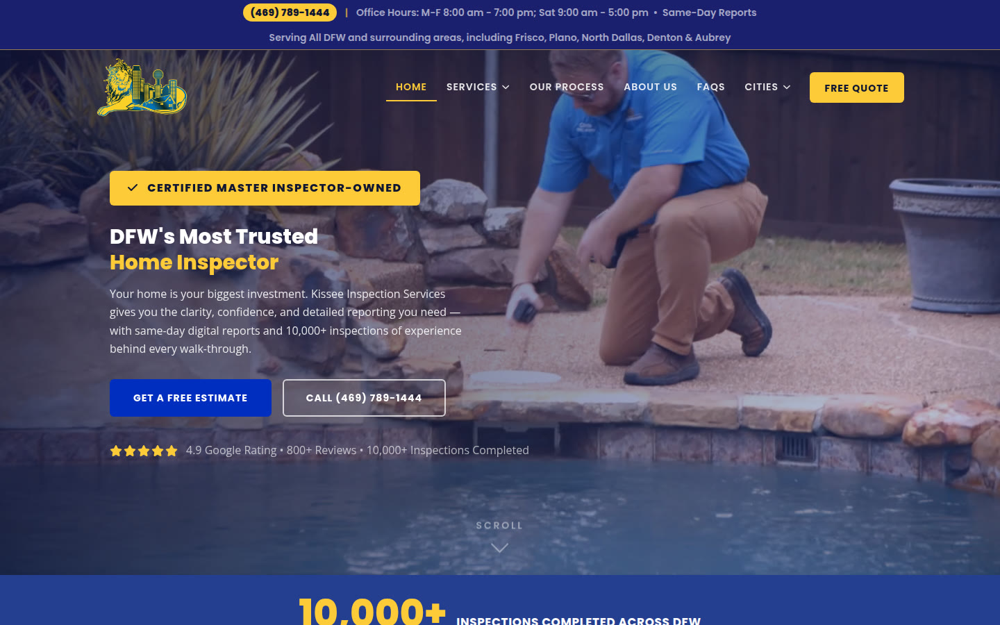
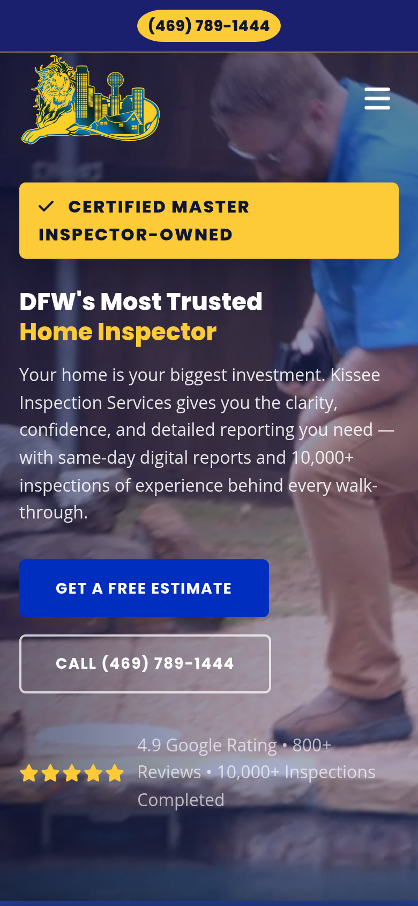

Selected Work / Case Study № 01
home inspections · custom website
Kissee Inspection Services · kisseeinspections.com
DFW's Most Trusted Home Inspector
Get a thorough property inspection in Frisco, TX, with Kissee Inspection Services. We provide peace of mind for your home or business.

The Brief
What Sets Kissee Inspections Apart
Your home is your biggest investment. Kissee Inspection Services gives you the clarity, confidence, and detailed reporting you need — with same-day digital reports and 10,000+ inspections of experience behind every walk-through.
Line on the live homepage4.9 Google · 800+ Reviews · CMI Certified Master Inspector · Est. 2009 · TREC Licensed & Insured
02 — Identity
Tokens from the stylesheet
The prototype stylesheet css/style.css labels these as house brand tokens. The same hex values are in the live site CSS. A written identity story was not in a project guide this account could read.
Color
Primary
--brand#002ebe
Mid
--brand-mid#243e90
Dark
--brand-dark#1a1f6e
Accent
--accent#FECB38
Ink
--ink#0f1631
Surface
--paper#f5f7fc
Type
Aa Bb
ABCDEFGHIJKLMNOPQRSTUVWXYZ · abcdefghijklmnopqrstuvwxyz · 0123456789
Poppins · prototype loads weights 600–800
Aa Bb
ABCDEFGHIJKLMNOPQRSTUVWXYZ · abcdefghijklmnopqrstuvwxyz · 0123456789
Open Sans · prototype loads weights 400–600
Logo
File img/logo.png from the review prototype. Shown smaller than the file.

Screenshot pending — content needed
A second mobile screen was not in the prototype files or this repo. The Hive study shows two phones. This page has the one homepage capture stored for the work grid.
03 — Mobile
Homepage on a phone
The phone frame is the homepage screenshot stored with this work page. The review prototype says no speed score is claimed.
Results pending — content needed
No load time or before-and-after figure is in a project guide or scope file. Numbers that appear above are lines printed on the live homepage, not a measured outcome of this page. The prototype banner says numbers on its performance panel come from that browser visit only.
04 — In Detail
Lines from the live homepage
Screenshot pending — content needed
Section crops were not in the source files. The three notes below are homepage lines, not separate screenshots.
Homepage
Same-day digital report
Your full digital report — with color photos and prioritized findings — is delivered the same day. No waiting days while the market moves.
Menu
Services named on the site
Homebuyer Inspection, Pre-Listing Inspection, New Construction, Home Warranty Inspection, Commercial Inspection, Infrared Thermal Imaging, Pool & Spa, Termite / WDI, Sprinkler Inspection, Septic & Well, Sewer Scope, 4-Point Inspection, Elevation Measurements.
Header
Where the site says it works
Serving All DFW and surrounding areas, including Frisco, Plano, North Dallas, Denton & Aubrey. Office hours on the page: M-F 8:00 am – 7:00 pm; Sat 9:00 am – 5:00 pm.
Quote pending — content needed
No named quote or testimonial was copied. Homepage review counts, where the site prints them, stay in the brief as the site's own line.
05 — The long scroll
Homepage viewport
The image is the homepage capture already in this repo. It is the top of the page, not a stitched full-page scroll.
Screenshot pending — content needed
A full-page scroll capture is not in the source files.